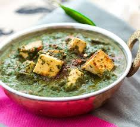
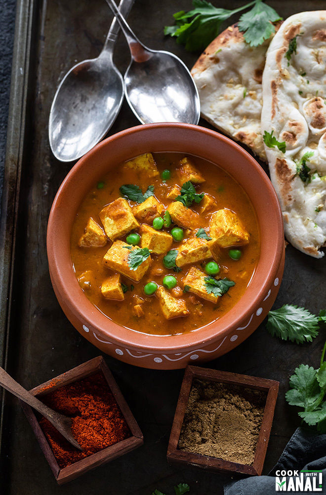
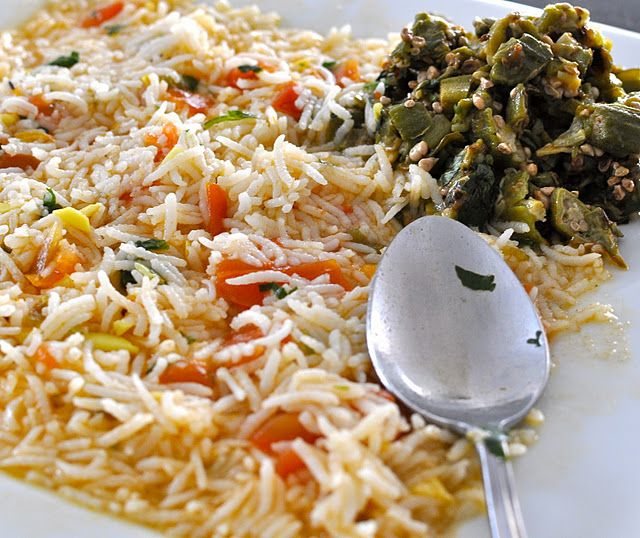
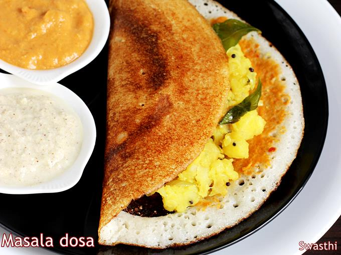

Why I am Vegan
I was vegetarian for my entire life growing up (except for kindergarten when I was forced to eat chicken nuggets against my will - apparently my dad did not tell them I was vegetarian - I was a kid, I didn't even understand what chicken nuggests were). Anyway, decided to go vegan in my sophomore year of college when I learned about how horrid factory farming was. Seeing how I was vegetarian out of ethical & moral concern, there was no reason for me not to go Vegan. Here are some of the reasons why I think Veganism is great:
-
Clean fuel
Being an athlete eating right is quite important. I'm happy to say it is probably one of the easiest parts of my life being vegan. I definitely would say I am fortunate to grow up in an Indian household where we pretty much only eat homecooked meals and all our food is essentially already vegan. But besides that, your body just processes vegan better - I can really eat as much as I want and not have to worry and feel great 24/7.
Some of my favorite vegan foods are:
-
Palak Tofu (we sub out the paneer with tofu)

-
Mattar Tofu (along the same lines - delicious)

-
Rasam

-
Masala dosa.. ohh so good

-
Ethically right
A large part of why I'm vegan is because I don't think it's wrong to kill an animal solely for taste. Let's be real, you can get essenntially the same athletic performance from veganism as eating meat. I see no reason for animal to suffer, live a horrible life in a factory farm, and die, just for taste. That's why I think lab-grown meat is the future.
-
Solid for the environment
I'm not going to claim I'm an expert behind this, but I'm fairly certain there is a strong consensus veganism/vegetarianism is significantly better for the environment. It's really the full package.
Home!